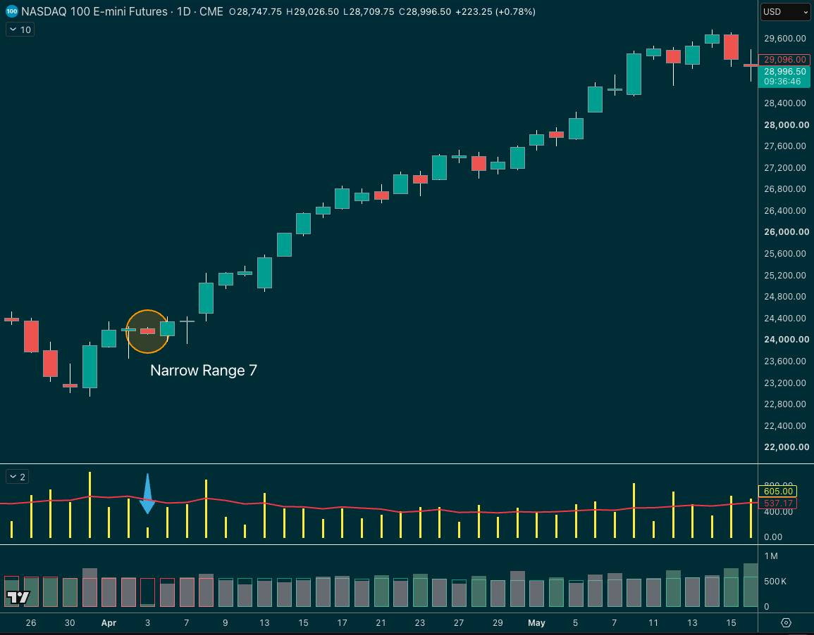

Volatility breakout plays are the backbone of so many traders' playbooks… and it makes sense, right?
If you can position before or at least fairly early into a volatility expansion move, you can be rewarded quite nicely.
One of these concepts you may have heard of is a Narrow Range 7… the narrowest range for the past 7 days.
And the idea is that traders use that as a volatility contraction signal, then trade the expansion.
But as is often the case with these things, it's not as simple as just trading a breakout after an NR7 day…
NARROW RANGE 7

Toby Crabel was one of the first traders to formalise the idea of a Narrow Range 7… building on the model from Wyckoff's work…
He worked on the thesis that low vol precedes high vol, and a NR7/NR4 day was a great filter for this.
Now, Crabel still runs a hedge fund called Crabel Capital Management. And his Crabel Gemini fund says this:
“Crabel Gemini is a pure alpha product that targets behavioral and structural market inefficiencies and provides low correlation to all traditional and alternative asset classes. Its 50+ strategies incorporate volatility breakout, reversal, factor timing, and other uncorrelated opportunistic concepts.”
Does he still use NR7? Who knows…
Anyway, uninvited history lesson over… tonight at 7 pm on the Pepperstone webinar, we try to get to the bottom of the NR7 strategy.
The rules, the filters, the pros, the cons, and ideas for bolt-on setups.
Trying to figure out if it should be in your playbook or not.
PS: If you missed the first two in the series, you can watch them here:
GDrive links also updated to include the indicators and PDFs 👇